Метод хорд.
Метод хорд – один із поширених методів. Його ще називають методом лінійного інтерполювання, методом пропорційних частин, або методом хибного положення.
Знову розглядаємо рівняння (1), в якому функція  неперервна на відрізкові і має на ньому неперервні похідні першого та другого порядків, які зберігають сталі знаки на цьому відрізку, і
неперервна на відрізкові і має на ньому неперервні похідні першого та другого порядків, які зберігають сталі знаки на цьому відрізку, і  . Тобто на заданому відрізку відокремлено корінь
. Тобто на заданому відрізку відокремлено корінь  . Поділимо відрізок
. Поділимо відрізок  у підношенні . Отримане число візьмемо як наближене значення кореня , де .
у підношенні . Отримане число візьмемо як наближене значення кореня , де .
Далі, застосовуючи цей підхід до того із відрізків 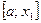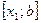, на кінцях якого функція  набуває значення різних знаків, отримуємо друге наближення кореня , і т.д.
набуває значення різних знаків, отримуємо друге наближення кореня , і т.д.
Геометрично, спосіб пропорційних частин еквівалентний заміні кривої у = хордою, яка проходить через точки і (див мал.1).
Для визначеності візьмемо випадок зображений на малюнку 1, а абсциса точки перетину хорди з віссю ох, буде наближенням значенням кореня рівняння (1). Дійсно, рівняння хорди АВ визначається рівнянням 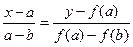.
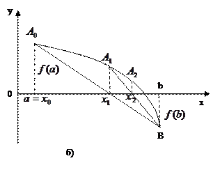Звідси враховуючи, що  - нуль функції, тобто при , отримуємо 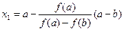
- нуль функції, тобто при , отримуємо 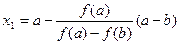
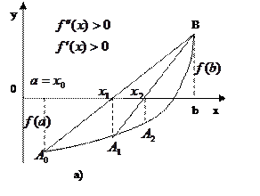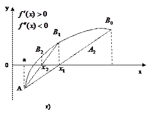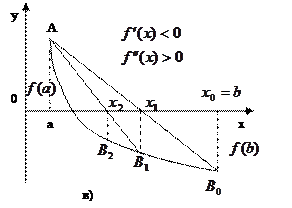
Тепер наближене кореня можна уточнити, якщо застосовувати метод хорд на відрізкові . Абсциса точки перетину хорди АВ буде другим наближенням кореня. Продовжуючи цей процес необмежено, дістанемо послідовність наближених значень кореня даного рівняння.
Для виведення формули метода хорд запишемо рівняння прямої, яка проходить через точки та .
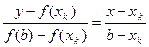
Поклавши у = 0, знайдемо абсцису точки перетину хорди АВ з віссю ох:
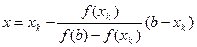
Знайдене значення х можна взяти наступне наближення кореня, тобто 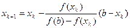 k = 0,1,2,…. (3)
Якщо для заданої функції мають місце нерівності , і , 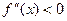, або , і ,  , то кінець b відрізка
, то кінець b відрізка  є нерухомим (Дивись мал.1,а та 1,б).
є нерухомим (Дивись мал.1,а та 1,б).
Якщо , і , 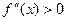 або , і , , то аналогічно (3) можна записати формулу
k = 0,1,2,….
У цьому випадку точка а с нерухомим кінцем відрізка  .
.
Отже формули для обчислення рівняння за методом хорд можна записати так:
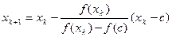 k = 0,1,2,….
Де 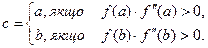
Достатні умови збіжності методу хорд дає така теорема.
Теорема 2. Нехай на відрізку  функція
функція  неперервна разом із своїми похідними до другого порядку включно, і при цьому , а похідна
неперервна разом із своїми похідними до другого порядку включно, і при цьому , а похідна  і зберігають сталі знаки на
і зберігають сталі знаки на  . Тоді існує такий окіл кореня
. Тоді існує такий окіл кореня  рівняння (1), що для будь-якого початкового наближення
рівняння (1), що для будь-якого початкового наближення  з цього околу, послідовність , обчислена за формулою (4), збігатиметься до кореня
з цього околу, послідовність , обчислена за формулою (4), збігатиметься до кореня  .
.